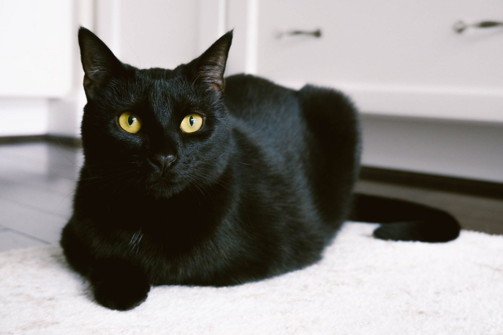

Black cat
Black cats, mysterious creatures with shimmering amber eyes, carry an enchanting aura that has sparked fascination and superstition for centuries. Associated with magic and the supernatural in various cultures, these elegant felines have often been surrounded by legends and popular beliefs.
Some consider them bearers of misfortune, linking their dark fur to ominous omens. However, others view them as guardians of good fortune, protectors of the unseen. The myths surrounding black cats may vary, but their charm endures.
Beyond superstitions, these feline creatures also embody the independent and mysterious spirit of the feline world. Their piercing eyes seem to hold ancient secrets, and their agility lends a feline elegance to each of their movements. Thus, whether black cats are perceived as bringers of good luck or wandering mysteries, their presence in our lives always arouses curiosity tinted with respect and admiration. Black cats remain, through the ages, enigmatic companions, capturing our imagination and awakening the magical essence that resides in every ebony-coated feline.
 Grumpy cat
Grumpy cat